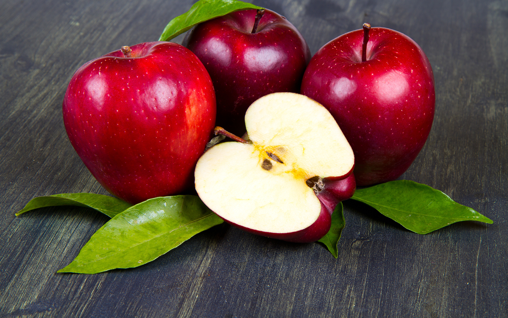
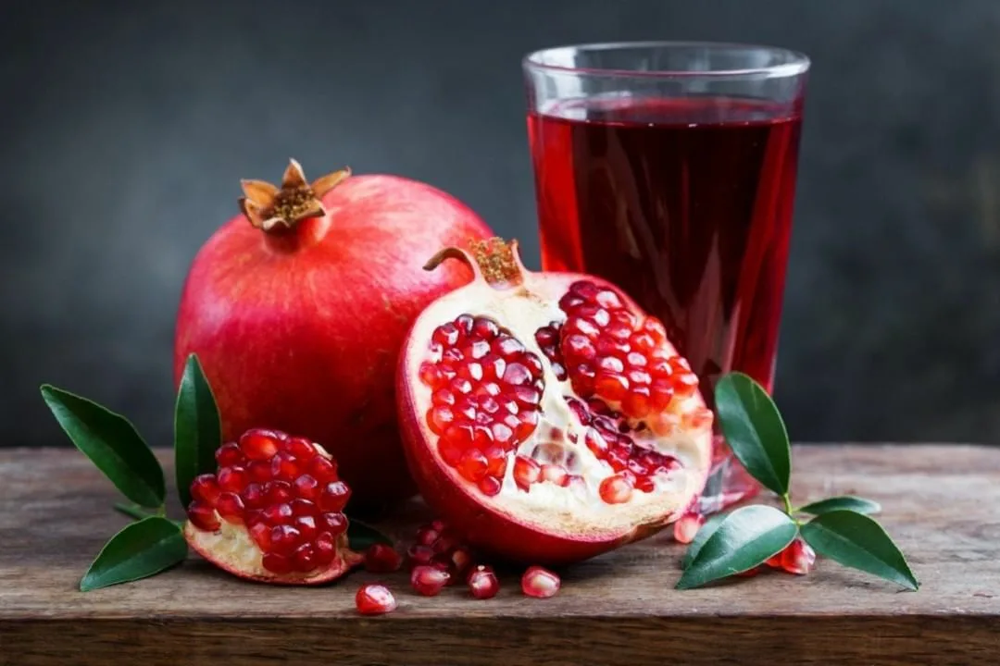
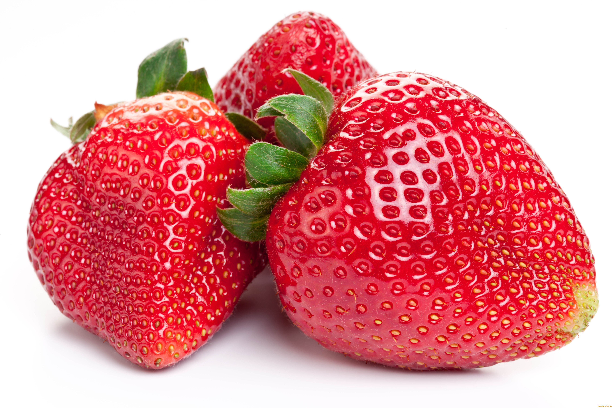

Meva (fruct) — yottiq urugʻli oʻsimliklarning urugʻli organi; odatda, urugʻlanish natijasida hosil boʻladi. Ammo, partenogenez yoʻli bilan koʻpayadigan oʻsimliklar mevasi (partenokarp meva) urugʻlanishsiz yuzaga keladi va urugʻsiz boʻladi. Mevalarning shakli, kattaligi va rangi har xil. Meva bitta tu-gunchadan hosil boʻlsa (oʻrik, gilos, olcha, mosh, jagʻjagʻ va boshqalar) oddiy yoki asl meva, bir guldagi bir necha tugunchadan yuzaga kelsa (malina, maymunjon, ayiqtovon va boshqalar) murakkab meva, tuguncha va guldagi boshqa qismlarning ishtirokida shakllanadigan boʻlsa (qulupnay, tut, olma va boshqalar) soxta meva deb ataladi.
  